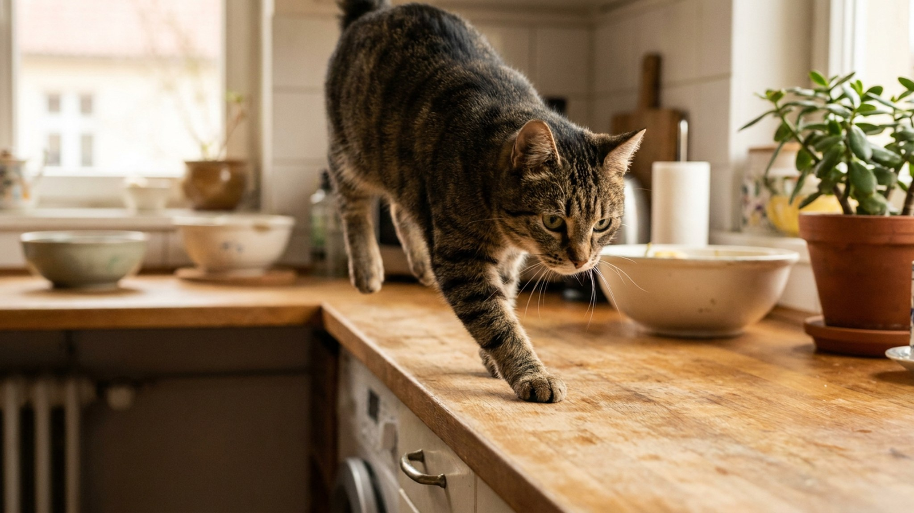

Отвернулись на секунду — кошка уже на столе, обнюхивает тарелки. Согнали — через пять минут снова там. Это не вредность и не тест вашего терпения: у кошки есть конкретные причины стремиться наверх. Понять их — значит найти решение, которое устраивает обоих. И одна из причин, связанная с плитой, — серьёзный повод действовать быстро.
Кошка — и хищник, и добыча одновременно. В дикой природе высота давала обзор за хищниками и преимущество при охоте. Этот инстинкт никуда не делся у домашних кошек. Высокая точка — самое безопасное место с точки зрения кошачьей логики.
Стол, холодильник, шкаф — это не просто поверхность, это «вершина», с которой виден весь зал. Если в квартире нет других высоких мест, которые доступны кошке, — стол остаётся единственным вариантом.
Решение: дать альтернативную «законную» вершину. Высокий кошачий комплекс или полка на стене на уровне 150–180 см — и кошка предпочтёт её столу, если она такая же удобная и обзорная.
На кухонном столе пахнет едой. Кошка — охотник с обонянием в разы острее человеческого. Для неё стол после ужина продолжает «кричать» запахами ещё несколько часов. Это прямое приглашение исследовать.
Что помогает:
Кошки — исследователи. Если квартира «пройдена», всё изучено, новых запахов и объектов нет — кошка ищет стимуляцию там, где что-то меняется. Кухня во время готовки — самое активное место в доме: запахи, звуки, движение. Естественно, кошку тянет туда.
Что делать: обогатить среду — когтеточки, туннели, смотровые платформы, интерактивные игрушки. Кошка, у которой достаточно собственного пространства для исследования, меньше стремится на чужую территорию (ваш стол).
С высокой точки кошка наблюдает за «дичью» — птицами за окном, движением хозяев, другими животными. Если окно расположено близко к столу или над ним — стол становится наблюдательным пунктом, а не просто поверхностью.
Что делать: создать наблюдательный пост у окна на приемлемой высоте — широкий подоконник с нескользящим покрытием, полочка у окна, кошачье «дерево» рядом с окном. Если кошке есть откуда смотреть на птиц — стол перестаёт быть нужен для этой цели.
Кухонные поверхности нередко тёплые — от плиты, от посудомойки, от работающей техники. Кошки инстинктивно ищут тёплые поверхности для отдыха. Особенно это заметно в холодное время года или у кошек, которым немного зябко.
Что делать: дать тёплую альтернативу. Подогреваемая лежанка, коврик у батареи, место рядом с тёплой техникой, но вне кухонной зоны. Решение проблемы скуки и тепла одновременно.
Стол — вопрос гигиены и привычки. Плита — вопрос безопасности. Кошка на включённой или недавно выключенной плите рискует получить ожог лап. Горячая конфорка не всегда визуально отличается от холодной — ни для хозяина, ни тем более для кошки.
Что делать обязательно:
Не работает долгосрочно:
Что даёт результат:
Главное правило: новая «законная» точка должна быть не хуже стола — такая же высокая, с таким же обзором. Если дать полку в углу без окна, а стол — у окна с видом на птиц, кошка выберет стол.
Материал носит информационный характер и не заменяет очную консультацию ветеринара.